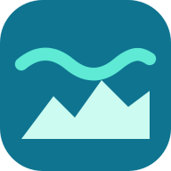

Add SeaBathy to your Home Screen
It then opens like any other app, full screen, and works with no signal once your charts are loaded.
- Tap the Share button: a square with an arrow pointing up. On newer iPhones it is under the ••• button.
- Scroll down and tap Add to Home Screen.
- Leave Open as Web App on, then tap Add.
- Open SeaBathy from its new icon while you still have internet.
Load your charts after installing: anything kept here in Safari does not move to the installed app.